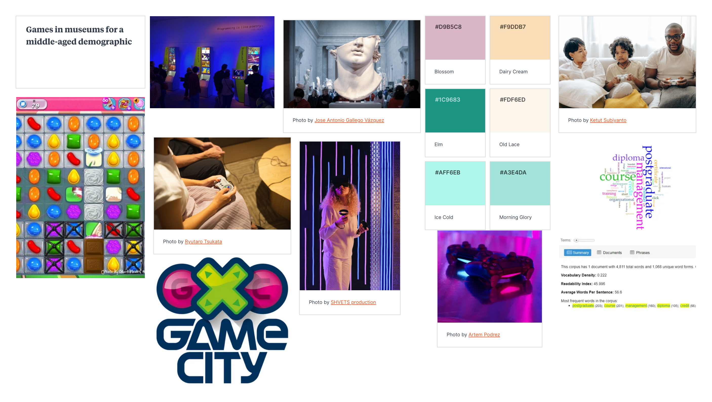

Independent Learning
Analysis of HRODC.com| Accuracy | No, information doesn't lead to anything credible. |
|---|---|
| Active Voice | Yes, with statements about "our mission statement." |
| Limit Biases | Yes, avoids biases as far as I can tell. |
| Clarity | No, too much technical jargon used. |
| Conciseness | No, very wordy and long. |
| Conversational & Smoothly Flowing Prose | No, sentences are long and wordy. |
| Correctness | Yes, grammatically correct. |
| Parallelism | No, no examples of parallelism could be found. |
| Positive Voice | Yes, positive voice is used to encourage students to sign up for courses. | ,
| Strong Nouns & Verbs | No, uses a lot of extra adverbs and adjectives. |
| Sentence Variety | No, especially when it lists the courses. |
| Simple Words | No, tries to be too impressive with its vocabulary |
| Shorter Words | No, very long paragraphs used. |
| Tone & Voice | Yes, uses a formal tone of voice which is needed when talking about academia. |
I believe I am at the stage of 1D in the AWE writing process as of week 5. Currently organising my data and thoughts to create the best website I can.
Next to head to the writing stage and begin to put my information and plan to use.
Might have to go back and revise my research as my target audience has changed as has my website's purpose. My research must reflect this new path.
As of week 11, revisiting this work, I am still at stage 1D. While I have gathered more research and HTML and CSS skills, I still have not begun to draft the future website as this is work for MAD B.
But since week 5, my target audience has been cemented and this portfolio has been better organised and planned. I now have a better file management system and website layout.
Lab Task
Looking at HRODC.com through Voyant tools.
- It is clear that the website uses professional vocabulary, but not varied enough to be engaging.
- Many words are repeated hundreds of times, such as 'postgraduate', 'course', 'management' and 'credit'
- Furthermore using the analysis only 22% of words used are unique, with low sentence variety.
- The website has an overuse of certain words; these could be shortened once defined or have this information on a different page.
- A lot of key points are repeats of previous information and therefore do not need to be restated.
Narrative examples
- Video games are not just for children and adults with too much time on their hands to play. Video games cover something as simple as playing games on your mobile phone or tablet while traveling. Games don't have to be violent and confusing but can be educational for adults and children alike!
- Some examples of video games used in museums include the Bannockburn experience at the Bannockburn visitor centre. Attendees can immerse themselves within the infamous battle of 1314 with Robert the Bruce, experienced in VR technology.
- Museum content doesn't just have to be signs and reading, video games provide a great way to interact with the information presented, heightening information retention!
These samples need work to make them more applicable to my website. the language needs to be updated along with what information would be said. More planning is required on this part, but these statements are a starting point.
